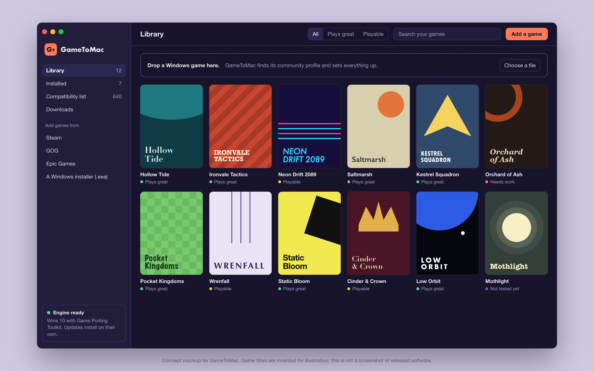
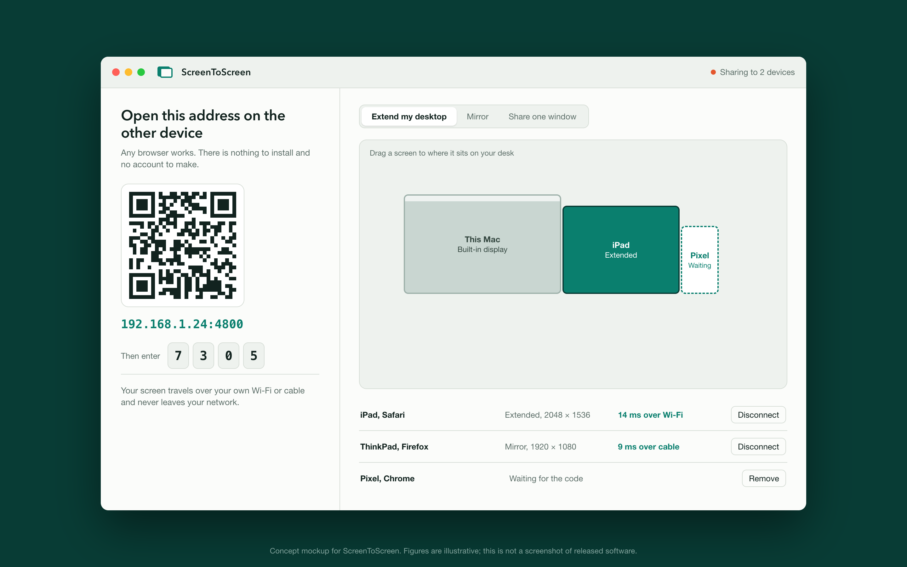
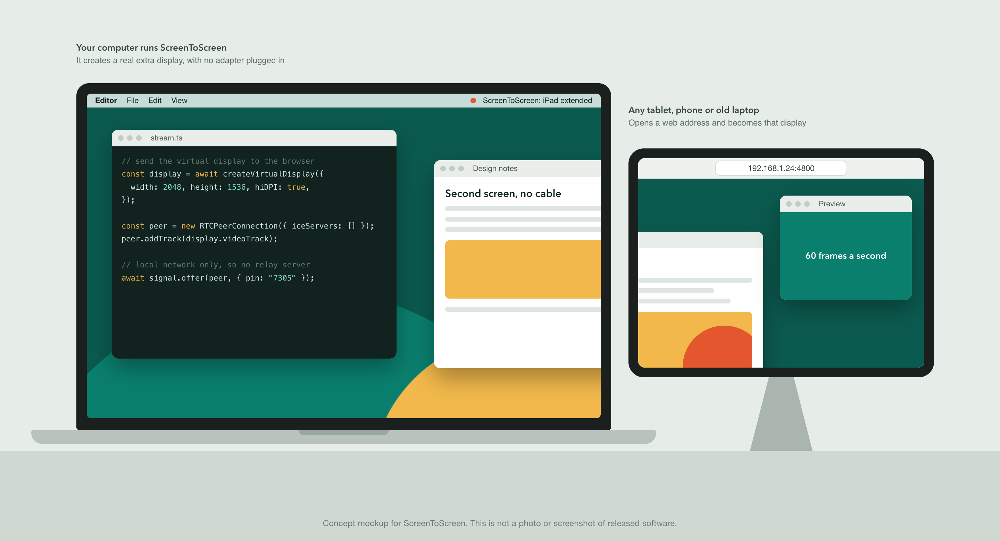

Proposal for Anthropic's Claude for Open Source program, September 2026
GameToMac and ScreenToScreen
Two free, open-source apps that do jobs people currently pay for: running Windows games on a Mac, and using a spare tablet, phone or laptop as a second screen.
Where things stand. Both projects are at the design and prototype stage. Nothing is released yet and there are no download numbers to report. The images are concept mockups; the games and figures in them are invented.

GameToMac
Windows games on a Mac with one click. Stands in for CrossOver.
The gap
Wine and Apple's Game Porting Toolkit already run much of the Windows catalogue on Apple silicon. Setup is the hard part. CrossOver solves it, as a paid product.
Whisky, the best-known free option, gathered close to 15,000 GitHub stars and was archived in April 2025. No free, maintained app with a shared compatibility database has replaced it.
How it works
Drop in a game and press Play. The right engine and settings are applied for you.
Compatibility profiles are plain text files in a public repository, so one player's fix reaches everyone.
Honest ratings with frame rates reported on named Mac models.
Works with Steam, GOG, Epic Games or a plain installer.

ScreenToScreen
Any device with a browser becomes a second screen. Stands in for Duet Display and Luna Display.
The gap
A tablet as a second monitor usually means a subscription, a hardware dongle, or staying inside one vendor's devices.
Deskreen proved the browser approach, but a true extended desktop needs a dummy display adapter, and newer features are planned for a paid edition. ScreenToScreen creates the display in software and keeps every feature open.
How it works
The other device installs nothing. It opens a web address and enters a four-digit number.
Extend the desktop, mirror it, or share one window.
Video goes straight to the browser over the local network. No relay server, account or tracking.
Works over Wi-Fi or a cable.

Six-month plan
Months
GameToMac
ScreenToScreen
1 and 2
Engine manager, game detection, profile format published
Browser client and host streaming over WebRTC, mirror mode
3 and 4
Public alpha, first 40 tested profiles, contributor guide
Virtual display on Windows and macOS, extend mode, public alpha
5 and 6
100 tested profiles, store integrations, signed release
Single-window mode, Linux host, signed release
How Claude would be used
Compatibility work. Each failing game is its own investigation through Wine logs, graphics traces and crash dumps. This is the largest share of the work.
Hard systems code. Display drivers, virtual displays, low-latency encoding and WebRTC tuning.
Tests and CI across macOS, Windows, Linux and mobile browsers.
Docs and onboarding, so non-engineers can submit a profile.
Reviewing contributions fast enough that contributors stay.
What we commit to
Both apps stay free and open source under GPL-3.0, so nobody can close the code and sell it.
Anthropic's support credited in each README, in every release's notes, and in each app's About window.
A public write-up of how Claude was used, including what did not work.
The credit "Proudly supported by Anthropic" is a proposal. It will appear only with Anthropic's approval, in the form Anthropic prefers, and without Anthropic's logo unless permitted.